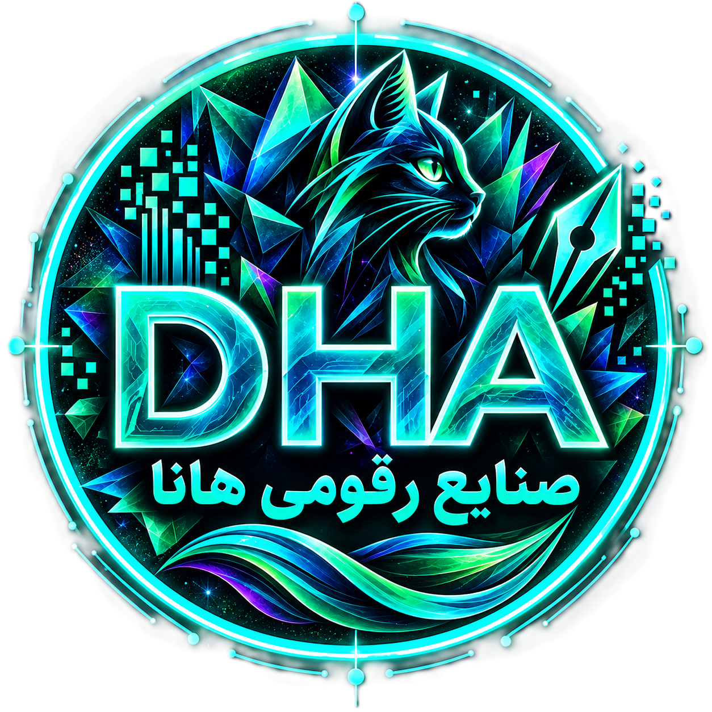

❖
هنرِ رقومی
سامانههای مولد، هنر الگوریتمی، عکاسی محاسباتی و رسانههای رقومی آزمایشی.
میان هنر و خوارزم، میان داده و خواب، میان هوش و غریزه — ص.ر.ه. در شبِ نیلی گام میزند.

صنایع رقومی هانا کارگاهی است آزمایشی در آفرینشگری محاسباتی که در فضای میانی میان فناوری و بیانِ هنری گام برمیدارد.
ما نرمافزار میسازیم، سامانههای بصری میآفرینیم، آزمایشهای یادگیری ماشین میپردازیم، هنرِ دادهمحور میآفرینیم و داراییهای رقومی بلاکچینمحور میسازیم — همه با حسی پساانسانی.
پرسش کانونی ما ساده نیست: هنگامی که محاسبه به رسانهی آفرینش بدل شود، چه رخ میدهد؟
ص.ر.ه. فراتر از یک رستهی فناورانه، در میان دانشها کار میکند. این است شبکهی گشوده.
سامانههای مولد، هنر الگوریتمی، عکاسی محاسباتی و رسانههای رقومی آزمایشی.
کاوش داده، تحلیل، تجسم، محاسبات آماری و کشفِ دادهمحور.
یادگیری ماشین، یادگیری ژرف، بینایی ماشین و هوش مصنوعیِ مولد.
توکنهای غیرقابلمعاوضه، داراییهای رقومی، تحلیل زنجیره و بومسازگانهای آفرینشیِ نامتمرکز.


سکویی برای هنرِ محاسباتی بر پایهی Julia که میکاود چگونه عکسها میتوانند — از راهِ پردازش تصویر، یادگیری ماشین و سامانههای مولد — به آثارِ رقومیِ تازه دگرگون شوند.

مجموعهی رسمیِ صنایع رقومی هانا را در اوپنسی ببینید — داراییهای رقومیِ برگزیده، آثارِ مولد و آفریدههای بلاکچینبنیان.
صنایع رقومی هانا به نامِ هانا نامگذاری شده است — بچهگربهای که در قلبِ هویتِ بصری این کارگاه نشسته است.
حضورِ او چیزی بهعمد انسانی و انداموار به این جهانِ محاسباتی میافزاید: کنجکاوی، یکتایی و منش.